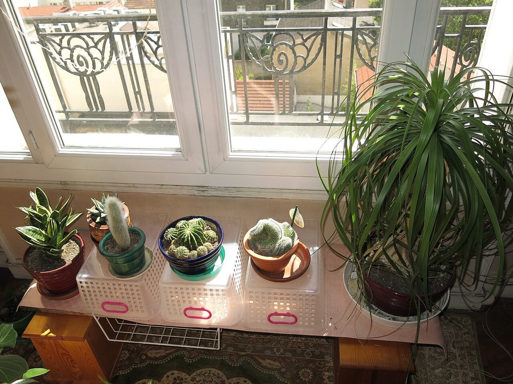

店のこと
1m
店のこと
お店について確認できているのは、所在地とInstagramのアカウントだけです。
確認できていること
- 店名は「cafe de clair」、業種はカフェ
- 所在地は奈良県吉野郡吉野町宮滝82-2
- 電話番号はなし。連絡はInstagramから
- 営業時間・定休日・メニュー・価格・ご予約・駐車場は準備中

想像してみる
「clair」という名前から
ここは制作側が想像して書いた部分です。お店の実際の様子・考え・メニューとは関係がありません。
由来は分かりません。制作側は、光がよく入って、すっきりと明るい居場所のようなお店かもしれない、と想像しました。たとえば窓の近くの席で、ゆっくり一杯を飲む。そんな時間を思い浮かべています(実際のお店の姿ではありません)。



町のこと
吉野町について
吉野町は奈良県中南部にあり、吉野川や山あいの里のイメージで語られることが多い町です。ただし、お店が川や山里と関係しているかどうかは分かりません。